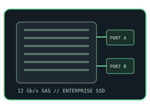

[ COMPONENT RECORD // SERIAL ATTACHED SCSI ]
SAS solid-
state drives.
Enterprise SAS SSDs use the Serial Attached SCSI protocol and dual-port server/storage connectivity. They are cataloged separately from SATA SSDs because the protocols and host compatibility are not interchangeable.

CATEGORY DIRECTORY: 1 enterprise SAS SSD leaf // 10 distinct SKU records. SAS-capable controller/backplane required; verify exact firmware and drive height in the system's compatibility documentation.
[ SUBCATEGORY DIRECTORY // 01 LEAF // 19 PART RECORDS ]
Browse SAS SSD subcategories
Interface & deployment
SAS initiators and SATA hosts are not interchangeable: a SATA-only controller does not provide a SAS target connection. Dual-port paths and failover behavior require compatible SAS HBAs, cabling, expander/backplane and host software.